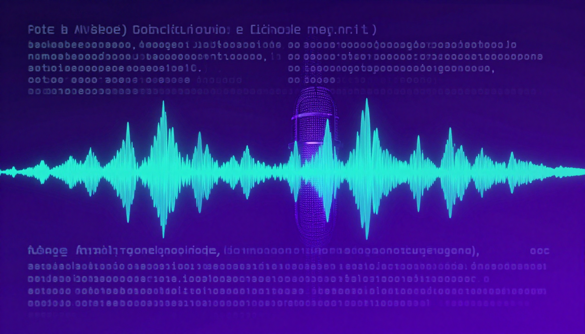

Productivity
Best AI Transcription Tools 2026: Speech-to-Text Compared

Best AI Transcription Tools for 2026
AI transcription tools convert speech to text with remarkable accuracy. Whether you need meeting notes, interview transcriptions, or video captions, these tools save hours of manual work.
| Tool | Best For | Price | Accuracy | Real-time |
|---|---|---|---|---|
| Otter.ai | Best for meetings | Free / $17/mo | 9/10 | Yes |
| Descript | Best for podcasts & video | Free / $24/mo | 9/10 | Yes |
| Rev AI | Best accuracy overall | $0.02/min | 9.5/10 | Yes |
| Whisper (OpenAI) | Best free/open-source | Free | 9/10 | No |
| Trint | Best for journalists | $52/mo | 9/10 | Yes |
| Fireflies.ai | Best for sales calls | Free / $10/mo | 8.5/10 | Yes |
| Sonix | Best multilingual | $22/mo | 8.5/10 | No |
| Happy Scribe | Best for subtitles | Free / $12/mo | 8/10 | No |
Otter.ai — Best for Meetings
Otter.ai is the most popular AI meeting transcription tool. It joins your Zoom, Google Meet, and Teams calls, transcribes in real-time, generates summaries, and extracts action items. The free plan includes 300 minutes/month.
Free AI Transcription
- Whisper by OpenAI — Best free transcription (open-source, local)
- Otter.ai Free — 300 min/month for meetings
- MacWhisper — Free macOS app using Whisper
🎁 Free AI Tools Guide 2026
Download our free guide with 50+ AI tool comparisons, pricing, and recommendations.
Download Free Guide →